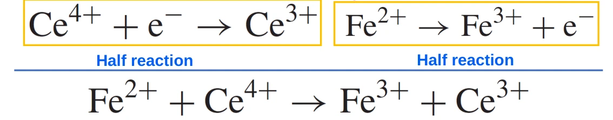
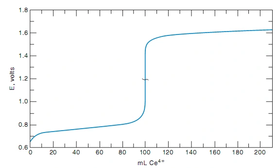
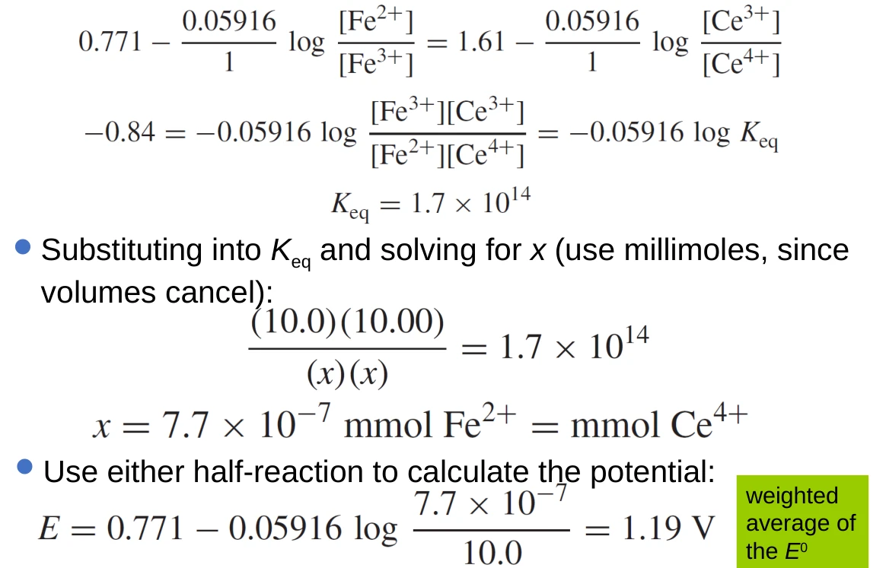
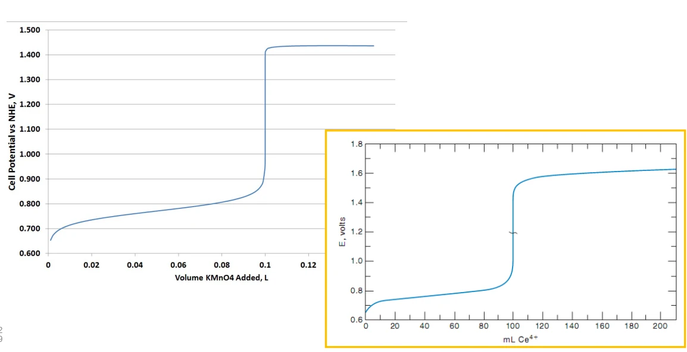
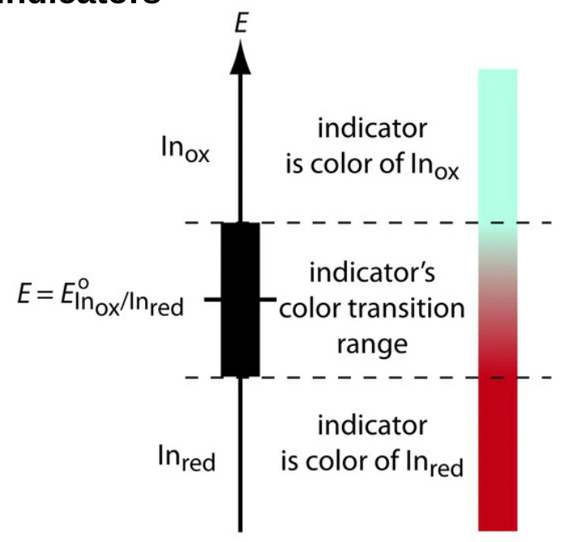
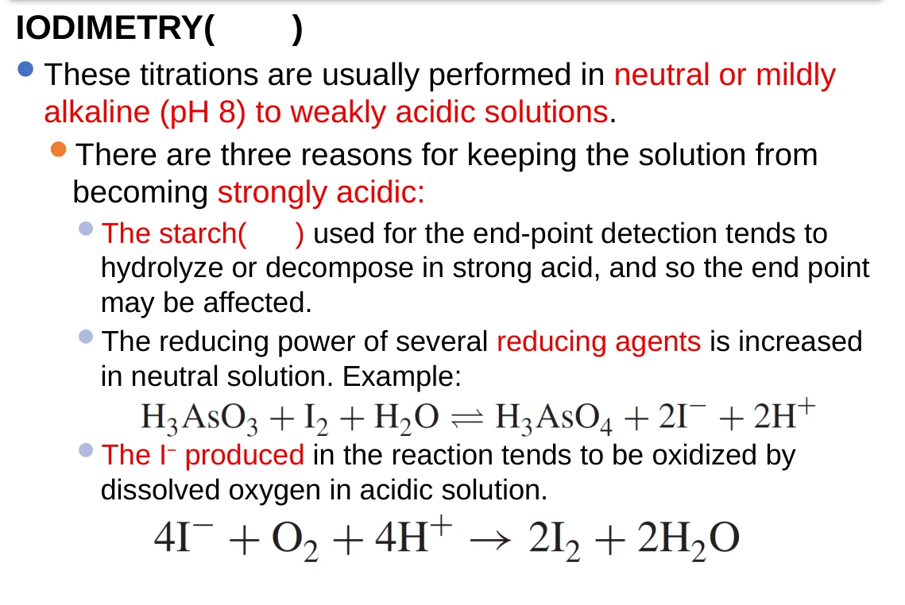
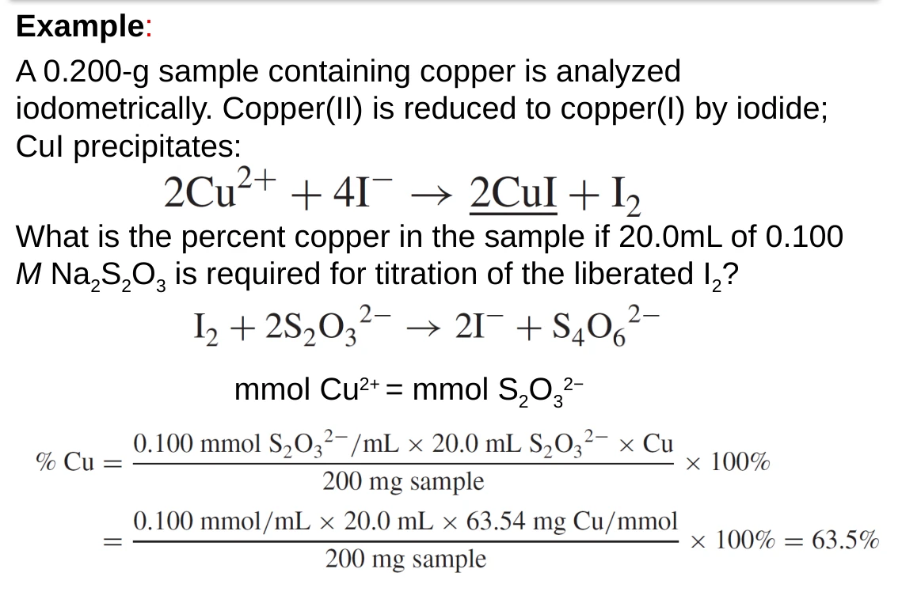
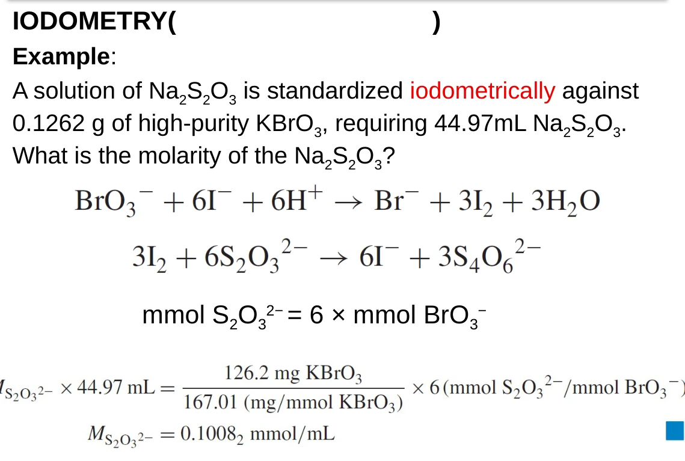
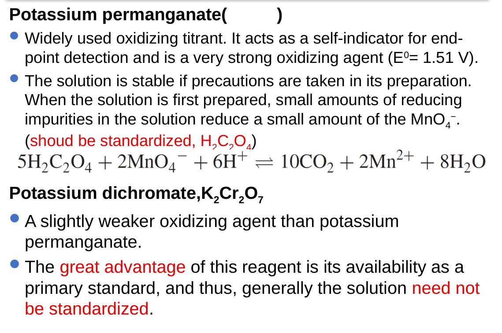
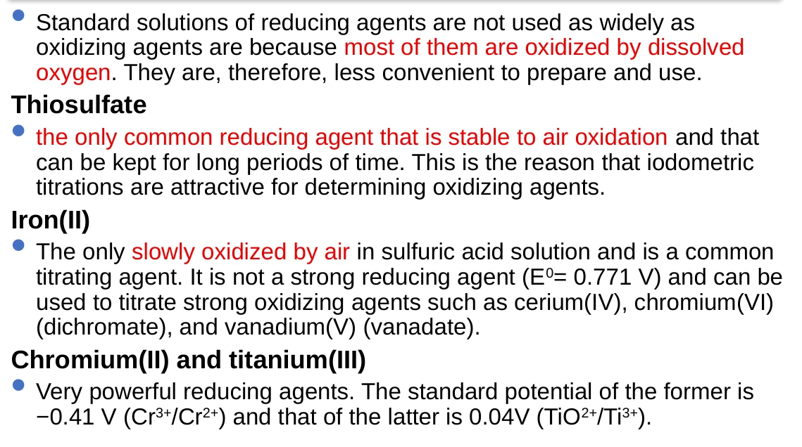

08 · REDOX AND POTENTIOMETRIC TITRATIONS
氧化还原与电位滴定
以电子守恒建立计量关系，以Nernst方程计算电位，以滴定曲线选择终点。覆盖47页课件，结合教材第14章补全推导与适用条件。
正文先建立知识体系，再展开公式、推导、例题与操作判断。课件存在的拼写与概念问题统一校订；保留的课件图片配有说明，复习时以正文的条件与公式为准。
8.1
知识体系：先确定计量，再计算电位
氧化还原滴定以电子转移建立样品与标准溶液的计量关系。氧化还原滴定回答“反应了多少”，电位滴定描述“怎样检测终点”。两者可以结合：用氧化剂滴定还原剂，同时记录电位随滴定剂体积的变化。
| 学习层次 | 核心问题 | 本章位置 |
|---|---|---|
| 计量关系 | 谁失电子、谁得电子？每摩尔分别转移几个电子？ | §8.2 半反应配平 |
| 平衡与驱动力 | 电位差如何决定 K？为什么消耗完仍有微量反应物？ | §8.3–8.4 Nernst 方程与平衡 |
| 曲线分段 | 计量点前、计量点、计量点后分别用哪个电对？ | §8.5–8.6 曲线与酸度效应 |
| 终点与操作 | 如何选指示剂？碘量法何时加淀粉？标准液怎样标定？ | §8.7–8.10 |
| 复习与校订 | 公式适用条件、课件勘误、例题和自测 | §8.12–8.15 |
课堂范围为课件第2–46页。第1、47页是封面与结束页。教材第14章与本课高度对应；§8.11中的预处理和电位法终点定位标为教材补充，便于把章节标题中的“电位滴定”讲完整。
来源：课件第2页；Christian 等《Analytical Chemistry》第7版 Ch.14 导言。公式与例题经独立复算。
8.2
电子守恒与半反应配平
氧化剂接受电子，自身被还原；还原剂给出电子，自身被氧化。电子守恒要求总反应中失去和得到的电子数相等。酸性介质下的半反应法依次配平其他元素、用 H₂O 配 O、用 H⁺ 配 H，再用 e⁻ 配电荷；将半反应乘以适当系数后相加。碱性介质可先按酸性配平，再在两侧加等量 OH⁻ 消去 H⁺，约去重复的 H₂O。
Ce⁴⁺ + e⁻ → Ce³⁺
Fe²⁺ + Ce⁴⁺ ⇌ Fe³⁺ + Ce³⁺
Fe²⁺与Ce⁴⁺的物质的量关系为1∶1。若换成酸性高锰酸根，Mn由+7降至+2，每摩尔接受5 mol电子：
5Fe²⁺ + MnO₄⁻ + 8H⁺ ⇌ 5Fe³⁺ + Mn²⁺ + 4H₂O
因此一摩尔 MnO₄⁻对应五摩尔 Fe²⁺，同时消耗八摩尔H⁺。若样品初始还原剂量为 n₀，滴定剂浓度为 cₜ，计量比为“ν mol样品∶1 mol滴定剂”，则：
Vₑ是计量点体积；n₀单位mol，cₜ单位mol·L⁻¹，体积取L。本式要求主反应定量、无额外共存还原剂消耗滴定剂。求完体积仍应核对反应速度与实际介质。

来源：课件第3、25页；Christian 等《Analytical Chemistry》第7版 §14.1。公式与例题经独立复算。
8.3
Nernst 方程、标准电位与条件电位
为统一符号，电位表中的半反应都按还原方向书写。对 Ox + ne⁻ ⇌ Red，Nernst 方程给出：
| 符号 | 含义与单位 | 使用要求 |
|---|---|---|
| E、E° | 电极电位、标准还原电位，单位V | 同一参比标度；标准电位对应规定标准态 |
| R、T、F | 气体常数8.314 J·mol⁻¹·K⁻¹；绝对温度K；法拉第常数约96485 C·mol⁻¹ | 0.05916 V只适用于298.15 K |
| n | 所写半反应转移的电子数 | Fe电对为1，MnO₄⁻电对为5；不能凭整个滴定反应统一替代 |
| a | 相对于标准态的无量纲活度 | 稀溶液可近似为cc°，c°=1 mol·L⁻¹；纯固体和纯液体活度取1 |
所有参与半反应的物种都必须进入反应商，指数等于配平后的计量系数。MnO₄⁻半反应的例子是：
若Mn两种形态活度之比固定，每升高1个pH单位，电位降低约0.09466 V。由此可见，“氧化能力强弱”必须带上介质条件。
条件电位（formal electrode potential）把固定酸度、离子强度和络合等介质效应吸收到常数项中，配合指定的浓度变量使用。它适用于规定介质，不能跨介质直接套用。课件为Fe³⁺/Fe²⁺与Ce⁴⁺/Ce³⁺给出0.771 V与1.61 V，后文计算沿用这组题设数值；真实分析应选择与介质匹配的电位。
把一个半反应整体乘5，电位本身保持不变：电子数及活度指数同时乘5，Nernst项中的5会抵消。电位是强度量，不能像反应焓一样乘以反应系数。
来源：课件第4–5、26、32页；Christian 等《Analytical Chemistry》第7版 §14.2；电化学基础见Ch.12。公式与例题经独立复算。
8.4
由电位差求平衡常数与混合溶液电位
把氧化剂的还原电位减去还原剂对应电对的还原电位，得到总反应的标准电位差 ΔE°。这里的 n 是配平总反应一次所转移的电子数。由热力学关系：
lg K = nΔE°0.05916 V （298.15 K）
K是所写总反应的无量纲热力学平衡常数。ΔE°为正对应标准反应自由能为负、K>1。对实际组成的反应方向，还需检验反应商Q与K的关系；标准电位差为正不等于任意组成下都自发向右。
Ce⁴⁺氧化Fe²⁺的平衡常数
ΔE°=1.61−0.771=0.839 V，n=1，因此lgK=14.182，K≈1.52×10¹⁴。课件把差值取0.84 V，写成约1.6–1.7×10¹⁴，属于舍入差异。反应远向右，但平衡时的Ce⁴⁺或Fe²⁺不能严格设为零，否则Nernst对数无法计算。
化学平衡时，同一溶液中能够快速建立电子交换平衡的两个电对电位相等：EFe=ECe。这适用于计量点前、计量点及计量点后。计量点只是总物质的量恰好符合反应比例的位置，并不是“电位等于零”的位置。
课件5.0 mL混合例题：先计量，后平衡
将5.0 mL 0.10 mol·L⁻¹ Ce⁴⁺与5.0 mL 0.30 mol·L⁻¹ Fe²⁺混合。初始分别为0.50与1.50 mmol。定量反应后Fe²⁺余1.00 mmol，生成Fe³⁺与Ce³⁺各0.50 mmol。
同一电对的两种物种处于同一总体积，浓度比可直接用物质的量比。若用Ce电对，设残余Ce⁴⁺为x mmol，则(0.50−x)²(1.00+x)x=K，得x≈1.64×10⁻¹⁵ mmol，浓度为1.64×10⁻¹⁶ mol·L⁻¹。将它代回Ce的Nernst方程得到同样的电位。
Fe/Ce的反应商分子分母总指数相等，且同一溶液体积相同，所以可以约去总体积。遇到含H⁺的式子，应把酸的活度或浓度另行保留，不能见到一个平衡常数就把所有浓度改成mmol。
来源：课件第4–16页；Christian 等《Analytical Chemistry》第7版 §14.2，Examples 14.1–14.2。公式与例题经独立复算。
8.5
Fe²⁺–Ce⁴⁺滴定曲线：三个区段与半滴定点
用0.100 mol·L⁻¹ Ce⁴⁺滴定100.0 mL 0.100 mol·L⁻¹ Fe²⁺。样品为10.00 mmol，计量点体积Vₑ=100.0 mL。下面V与Vₑ使用相同体积单位，并忽略远离计量点时的微量逆反应。
| 区段 | 可靠计算电对 | 公式及原因 |
|---|---|---|
| 0<V<Vₑ | Fe³⁺/Fe²⁺ | E=E°Fe+0.05916 V lg VVₑ−V；Fe³⁺为已反应量，Fe²⁺为剩余量 |
| V=Vₑ | 联立两条Nernst方程 | 生成物总量相等，逆反应产生Fe²⁺与Ce⁴⁺等量；两个对数项相消 |
| V>Vₑ | Ce⁴⁺/Ce³⁺ | E=E°Ce+0.05916 V lg V−VₑVₑ；Ce⁴⁺为过量量，Ce³⁺为已消耗滴定剂量 |
计量点电位的推导
设两种残余反应物浓度均为x，两种生成物浓度均为C−x：
E = E°Ce + 0.05916 V lg xC−x
两式相加，对数项严格抵消：
常见电子数加权平均式n₁E₁°+n₂E₂°n₁+n₂只有在两电对的活度与物料关系使加权对数项抵消时才可用。Fe/Ce例题满足这一条件；H⁺、复杂计量指数和未固定副反应可能留下修正项。应先写Nernst方程，再决定能否套平均式。
| 加入Ce⁴⁺体积 | 计算位置 | 电位（相对于课件氢电极标度） |
|---|---|---|
| 0 mL | 只有Fe²⁺浓度，缺少另一形态活度 | 现有数据不足以按此模型计算初始电位 |
| 10.0 mL | Fe³⁺∶Fe²⁺=1∶9 | 0.7145 V，约0.715 V |
| 50.0 mL | Fe³⁺与Fe²⁺活度近似相等 | 0.7710 V |
| 100.0 mL | 计量点，两电对联立 | 1.1905 V，约1.19 V |
| 200.0 mL | 过量Ce⁴⁺与生成Ce³⁺活度近似相等 | 1.6100 V |
半滴定点是V=0.5Vₑ。对本例1∶1电对，它使活度比为1，于是E=E°Fe。对I₂+2e⁻⇌2I⁻，反应商含aI⁻²，物质的量转化一半并不使该反应商等于1。课件第20页给出的“固定降低0.018 V”缺少绝对浓度条件，详见勘误表。


来源：课件第17–24页；Christian 等《Analytical Chemistry》第7版 §14.3，Example 14.3。公式与例题经独立复算。
8.6
含H⁺电对：高锰酸根滴定Fe²⁺
课件用100.0 mL 0.100 mol·L⁻¹ Fe²⁺与100.0 mL 0.0200 mol·L⁻¹ MnO₄⁻展示不对称曲线。两者为10.00与2.000 mmol，符合5∶1计量关系。计量点总体积0.2000 L，所以生成Fe³⁺约0.0500 mol·L⁻¹、Mn²⁺约0.0100 mol·L⁻¹。
设平衡残余Fe²⁺浓度为x，则MnO₄⁻为x5，生成物分别为C−x和C−x5，其中C=0.0500 mol·L⁻¹。在活度系数近似相同、使用规定酸活度的模型中，两Nernst方程给出：
E = E°Mn + b5 lg xC−x + 8b5 lg aH⁺
b=0.05916 V。第二式乘5，与第一式相加，即得酸度修正的计量点公式：
沿用课件aH⁺≈0.21这一计算设定，结果为1.3334 V。裸标准电位的加权平均是1.3868 V，算术平均是1.1405 V；酸度项降低了约0.0535 V。课件用舍入后的K计算得到约1.34 V，和这里的1.33 V具有同样的物理趋势，但绿框“加权平均0.89 V”显然不正确。
反应消耗0.01600 mol H⁺。原0.0500 mol硫酸经稀释后的总硫酸根分析浓度是0.2500 mol·L⁻¹，而不是0.2100 mol·L⁻¹；质子转移不会把硫酸根物质的量消掉。课件把“相当于消耗0.008 mol H₂SO₄”后所得浓度直接当[H⁺]，是教材沿用的简化，不能推广为严格算法。若按硫酸第一步完全解离、第二步Ka2=0.012且忽略其他酸碱及活度效应，则[H⁺]−[SO₄²⁻]=0.1700 mol·L⁻¹、[HSO₄⁻]+[SO₄²⁻]=0.2500 mol·L⁻¹，联立解得[H⁺]≈0.1852 mol·L⁻¹，电位约1.3291 V。本例实际浓度较高，严格分析还需处理活度及络合。
计量点前主要追踪Fe电对，计量点后追踪MnO₄⁻/Mn²⁺电对并保留酸度项。曲线不对称的原因包括半反应电子数和质子计量关系不同。计量点不能通过把两个标准电位“取中间”定位，也不能把任何曲线的数学拐点无条件等同于严格计量点。

来源：课件第25–29页；Christian 等《Analytical Chemistry》第7版 §14.3，Example 14.4。公式与例题经独立复算。
8.7
终点指示：自指示、淀粉与氧化还原指示剂
| 方法 | 显色依据 | 典型终点与局限 |
|---|---|---|
| 自指示法 | 滴定剂自身有颜色，反应前后颜色差别明显 | KMnO₄滴定：过量少量MnO₄⁻出现持续浅粉红；终点略超过计量点 |
| 淀粉指示剂 | 淀粉与碘/多碘物种形成深蓝显色体系 | 直接碘量法蓝色出现；间接碘量法蓝色消失；需控制加入时机 |
| 氧化还原指示剂 | 指示剂本身Ox/Red两种形态颜色不同 | 电位决定形态比；变色区间应全部落在滴定突跃内 |
对InOx+nIne⁻⇌InRed，令浓度比在10∶1到1∶10间改变，298.15 K时：
变色范围：E°′In ± 0.05916 VnIn；全宽为 0.11832 VnIn
nIn是指示剂半反应的电子数。若为1，全变色幅度约0.12 V；为2时约0.059 V。这是形态比与目视颜色的近似判据，并非一切滴定必须满足的固定电位突跃。选指示剂除了看电位，还要保证电子转移迅速、可逆，投加量不明显消耗滴定剂。

课件指示剂表重绘
| 指示剂 | 还原型颜色 | 氧化型颜色 | 介质与课件给定电位 |
|---|---|---|---|
| 硝基邻菲啰啉亚铁（Nitroferroin） | 红 | 浅蓝 | 1 mol·L⁻¹ H₂SO₄；1.25 V |
| 邻菲啰啉亚铁（Ferroin） | 红 | 浅蓝 | 1 mol·L⁻¹ H₂SO₄；1.06 V |
| 二苯胺磺酸（Diphenylaminesulfonic acid） | 无色 | 紫 | 稀酸；0.84 V |
| 二苯胺（Diphenylamine） | 无色 | 紫罗兰 | 1 mol·L⁻¹ H₂SO₄；0.76 V |
| 亚甲蓝（Methylene blue） | 无色 | 蓝 | 课件列0.53 V，但氧化/还原型颜色印反；具体条件电位需查适用体系 |
| 靛蓝四磺酸盐（Indigo tetrasulfonate） | 无色 | 蓝 | 1 mol·L⁻¹酸；0.36 V |
表中数值对应所列介质，不应当作脱离pH的统一常数。亚甲蓝颜色校订另据Purdue University蓝瓶实验说明核对。Ferroin的Fe(II)配合物为红色，Fe(III)形态为浅蓝；不能把该配合物电位与游离Fe³⁺/Fe²⁺的0.771 V混为一谈。
来源：课件第30–35页；Christian 等《Analytical Chemistry》第7版 §14.4，Table 14.1。公式与例题经独立复算。
8.8
直接碘量法与间接碘量法
碘既可作为中等强度氧化剂直接滴定还原剂，也可作为氧化剂分析的中间计量载体。两条路线的对象、滴定剂和终点颜色恰好不同。
| 项目 | 直接碘量法（iodimetry） | 间接碘量法（iodometry） |
|---|---|---|
| 被测对象 | 能够被碘定量氧化的还原剂 | 能把I⁻氧化为碘的氧化剂 |
| 操作路线 | 用碘标准液直接滴定样品 | 样品加过量KI放出碘，再用Na₂S₂O₃滴定生成的碘 |
| 主要滴定剂 | 碘液，常以I₃⁻存在 | 硫代硫酸钠标准溶液 |
| 淀粉终点 | 少量过量碘使蓝色出现 | 剩余碘耗尽，蓝色消失 |
| 介质选择 | 按具体分析物选择，常为弱酸至近中性或弱碱 | 氧化剂释放碘常需酸性，随后须兼顾S₂O₃²⁻稳定性 |
| 淀粉时机 | 初始碘浓度低时可预先加少量 | 通常滴到浅黄色、接近终点再加入 |
碘液为何加入过量KI
I₂在水中的溶解度较小，与I⁻形成三碘离子后可增加溶解度：
I₃⁻ + 2e⁻ ⇌ 3I⁻
用I₂写反应是方便表达碘的计量当量；在KI过量的溶液中，实际物种含I₃⁻及多碘平衡。淀粉的深蓝色与这些碘物种的结合有关，淀粉自身的氧化还原形态不是显色原因。
直接碘量法的介质限制
过强碱性使碘发生歧化，破坏标准液的有效氧化当量。过强酸性可能使淀粉水解，促进溶解氧氧化I⁻，还会改变分析物电对的条件电位。课件“pH约8”是某些分析方法的条件，不能推广为全部碘量分析的共同pH。

课件直接碘量分析对象表重绘
| 分析物 | 与碘的计量反应 | 课件条件或注意点 |
|---|---|---|
| H₂S | H₂S + I₂ → S + 2I⁻ + 2H⁺ | 酸性 |
| SO₃²⁻ | SO₃²⁻ + I₂ + H₂O → SO₄²⁻ + 2I⁻ + 2H⁺ | 酸度影响平衡，按具体方法控制 |
| Sn²⁺ | Sn²⁺ + I₂ → Sn⁴⁺ + 2I⁻ | 酸性 |
| As(III) | H₂AsO₃⁻ + I₂ + H₂O → HAsO₄²⁻ + 2I⁻ + 3H⁺ | pH约8，控制产生的H⁺ |
| N₂H₄ | N₂H₄ + 2I₂ → N₂ + 4I⁻ + 4H⁺ | 注意每摩尔N₂H₄对应2 mol I₂ |
间接碘量法的电子当量链
I₃⁻ + 2S₂O₃²⁻ → 3I⁻ + S₄O₆²⁻
硫代硫酸根在规定条件下氧化为连四硫酸根。每1 mol碘对应2 mol S₂O₃²⁻。例如1 mol Cr₂O₇²⁻释放3 mol I₂，再消耗6 mol S₂O₃²⁻；Cu²⁺释放碘时还同时生成CuI沉淀，计量关系应按完整反应重新建立。
本法测量生成的碘，未反应KI不用于相减计算。返滴定需要准确加入已知过量试剂、再测剩余量，以“加入量减剩余量”求样品消耗量。课件第39页的“Back titration”标签应改为间接碘量分析。教材在其滴定分类框架中又称它为direct titration，意在强调无需返滴定差值；中文“间接碘量法”指经碘进行转化，两个分类维度应分别理解。
后加淀粉与酸性介质中的误差控制
碘浓度高时过早加淀粉，会使较多碘与淀粉结合，解离和释放较慢，终点拖延。滴到浅黄色再加，可保持灵敏而锐利的蓝色消失。若在强酸中长时间放置，淀粉还会水解。加足KI促进定量释放碘，并尽快滴定，可减少碘挥发及空气氧化I⁻造成的偏差。
滴定时应充分混合，避免局部过量硫代硫酸根在强酸中分解。出现硫浑浊提示副反应。酸性下被空气氧化的I⁻额外产生碘，一般使测氧化剂结果偏高；碘挥发损失一般使结果偏低。
来源：课件第36–43页；Christian 等《Analytical Chemistry》第7版 §14.5，Tables 14.2–14.3。公式与例题经独立复算。
8.9
碘量法例题与计量关系总表
课件间接碘量反应表重绘
| 分析物 | 释放碘的反应 | 每mol分析物对应S₂O₃²⁻ |
|---|---|---|
| MnO₄⁻ | 2MnO₄⁻ + 10I⁻ + 16H⁺ → 2Mn²⁺ + 5I₂ + 8H₂O | 5 mol |
| Cr₂O₇²⁻ | Cr₂O₇²⁻ + 6I⁻ + 14H⁺ → 2Cr³⁺ + 3I₂ + 7H₂O | 6 mol |
| IO₃⁻ | IO₃⁻ + 5I⁻ + 6H⁺ → 3I₂ + 3H₂O | 6 mol |
| BrO₃⁻ | BrO₃⁻ + 6I⁻ + 6H⁺ → Br⁻ + 3I₂ + 3H₂O | 6 mol |
| Ce⁴⁺ | 2Ce⁴⁺ + 2I⁻ → 2Ce³⁺ + I₂ | 1 mol |
| Fe³⁺ | 2Fe³⁺ + 2I⁻ ⇌ 2Fe²⁺ + I₂ | 1 mol；需满足具体反应完全性条件 |
| H₂O₂ | H₂O₂ + 2I⁻ + 2H⁺ → I₂ + 2H₂O | 2 mol；课件注明Mo(VI)催化 |
| As(V) | H₃AsO₄ + 2I⁻ + 2H⁺ ⇌ H₃AsO₃ + I₂ + H₂O | 2 mol；酸度影响 |
| Cu²⁺ | 2Cu²⁺ + 4I⁻ → 2CuI↓ + I₂ | 1 mol |
| HNO₂ | 2HNO₂ + 2I⁻ + 2H⁺ → I₂ + 2NO + 2H₂O | 1 mol；教材该表遗漏酸性配平项，已补齐 |
| SeO₃²⁻ | SeO₃²⁻ + 4I⁻ + 6H⁺ → Se + 2I₂ + 3H₂O | 4 mol |
| O₃ | O₃ + 2I⁻ + 2H⁺ → O₂ + I₂ + H₂O | 2 mol；教材给pH 7–8.5用于与O₂区别 |
| Cl₂ | Cl₂ + 2I⁻ → 2Cl⁻ + I₂ | 2 mol |
| Br₂ | Br₂ + 2I⁻ → 2Br⁻ + I₂ | 2 mol |
| HClO | HClO + 2I⁻ + H⁺ → Cl⁻ + I₂ + H₂O | 2 mol |
测铜：0.200 g样品，20.0 mL 0.100 mol·L⁻¹ Na₂S₂O₃
每2 mol Cu²⁺释放1 mol I₂，后者消耗2 mol S₂O₃²⁻，因此Cu²⁺与S₂O₃²⁻是1∶1。n(Cu)=0.100×0.0200=0.00200 mol。取M(Cu)=63.546 g·mol⁻¹，铜质量0.127092 g：
若样品先定容再取分样，还要乘总体积与分样体积之比；课件这题测的是整份0.200 g样品，不需要额外倍数。教材补充：CuI可能吸附碘，实际方法可在终点附近使用适当试剂释放碘，具体条件按方法规定。

KBrO₃标定Na₂S₂O₃
高纯KBrO₃质量0.1262 g，消耗Na₂S₂O₃体积44.97 mL。先由BrO₃⁻还原为Br⁻确认6电子，再由碘链得每摩尔KBrO₃对应6 mol S₂O₃²⁻：
课件按167.01 g·mol⁻¹得到0.10082 mol·L⁻¹；差异来自原子量舍入。标定须使用生成的碘全部留在溶液中且反应定量的条件。

来源：课件第40、43–44页；Christian 等《Analytical Chemistry》第7版 §14.5，Examples 14.6–14.7，Table 14.3。公式与例题经独立复算。
8.10
常用氧化剂、还原剂及标定
| 标准液 | 主要计量与特点 | 准备和使用条件 |
|---|---|---|
| KMnO₄滴定 | 酸性下每mol接受5 mol电子，紫色可自指示 | 一般先配制、处理MnO₂杂质，再标定；Na₂C₂O₄为常用基准物 |
| K₂Cr₂O₇滴定 | 酸性下每mol接受6 mol电子；可取得高纯一级标准物 | 准确称量可直接配制；终点常用二苯胺磺酸类指示剂，极高准确度时仍可校正方法终点偏差 |
| Ce(IV)滴定 | 通常每mol接受1 mol电子；条件电位随酸介质变化 | 酸性防止水解；可用Ferroin；课件1.61 V为指定题设 |
| Na₂S₂O₃滴定 | 与碘反应生成S₄O₆²⁻；每mol失去1 mol电子当量 | 用于间接碘量法；应标定并按方法储存，不能把相对稳定理解为永不变浓度 |
| Fe(II)标准液 | 可还原较强氧化剂，对应Fe³⁺/Fe²⁺电对 | 酸性有助减缓空气氧化；浓度需检查 |
| Cr(II)、Ti(III) | 还原能力较强；课件列Cr³⁺/Cr²⁺约−0.41 V、TiO²⁺/Ti³⁺约0.04 V | 易受空气氧化，处理与保存较困难；数值对应规定介质 |
KMnO₄中的MnO₂杂质会促进进一步分解。过滤应采用适宜的惰性过滤介质；标定草酸盐需加热提高反应速度，生成的Mn²⁺又会催化后续反应，初期与后期速度可能不同。
课件写“用H₂C₂O₄标定”是在强调草酸氧化反应，教材给出的典型一级标准物是Na₂C₂O₄，溶于酸性介质后形成相应草酸物种。滴定剂选用兼顾反应完全性、速度、选择性、溶液稳定性和可检测终点，单凭标准电位最高不能决定优劣。


来源：课件第45–46页；Christian 等《Analytical Chemistry》第7版 §14.6–14.7。公式与例题经独立复算。
8.11
教材补充：电极测量、终点定位与样品价态
电位滴定记录的是指示电极与参比电极之间的电位差。对可快速交换电子的可溶性氧化还原电对，Pt可作为惰性指示电极；参比电极保持稳定电位，例如Ag/AgCl。测量采用近零电流条件，以尽量避免反应物被电极测量过程消耗。
Ejunction为液接电位项，其符号随电池接线约定而定。课件给出相对于氢电极的计算电位；仪器若使用其他参比电极，读数会出现参比电位偏移。稳定偏移主要改变曲线纵轴，不改变计量体积。参比漂移、反应过慢和电极污染则可能改变曲线与终点判断。
| 处理方法 | 如何判断终点 | 条件与局限 |
|---|---|---|
| 原始E–V曲线 | 在突跃附近密集取点、比较曲线变化 | 充分搅拌并等待电位稳定；复杂非对称体系需考虑模型偏差 |
| 一阶导数 | ΔEΔV在突跃附近出现极值 | 横坐标取相邻体积的中点；有限体积步长影响定位精度 |
| 二阶导数 | 二阶差分在突跃附近过零 | 对噪声更加敏感，不能只靠一个随机过零点 |
| Gran图（拓展） | 通过适用模型把对数信号转成近似线性函数并外推终点 | 只用于模型与选取区段满足近似条件的数据；本课件未展开 |
统一样品价态与去除过量预处理剂
样品溶解后若含Fe(II)/Fe(III)混合态，直接用氧化剂测Fe(II)只能得到可被氧化的那部分。要测总铁，须先把铁定量转成规定价态，再除去可能消耗滴定剂的过量预还原剂。假如残余还原剂也与KMnO₄反应，按“全部滴定剂都用于铁”计算，就会使铁结果偏高。
来源：课件第2、30为课堂入口；本节主体为教材补充页；Christian 等《Analytical Chemistry》第7版 §14.8–14.9。公式与例题经独立复算。
术语核对：IUPAC potentiometric titration。这里概述教材原理，具体实验应采用课程给定方法。
8.12
详实应试笔记：公式、条件与解题顺序
拿到题目先明确反应介质、参比标度、样品/滴定剂价态和电子数，写出配平总反应。先算物质的量与计量点体积，再判断当前区段，最后选择含有已知两种形态的电对。计算完成检查单位、活度近似及忽略项。
| 公式 | 物理意义 | 适用条件与易错点 |
|---|---|---|
| Vₑ=n₀νcₜ | 反应计量点体积 | 计量比ν∶1；cV单位一致 |
| E=E°+0.05916 Vn lgaOxaRed | 简单电对的Nernst式 | 298.15 K、Ox/Red均为1次幂；复杂半反应须写完整Q |
| lgK=nΔE°0.05916 V | 从标准电位差求平衡驱动力 | ΔE°是两还原电位之差；n按总反应 |
| Eₑ=E°Fe+E°Ce2 | Fe/Ce计量点 | 仅对本例对数项相消的体系；不能推广成万能平均 |
| Eₑ=E°Fe+5E°Mn6+8×0.05916 V6 lgaH⁺ | Fe/Mn计量点的酸度修正 | 本例5∶1物料关系与活度近似；酸活度另算 |
| ΔEIn=0.11832 VnIn | 指示剂完整变色区间宽度 | 两型颜色比例采用10∶1与1∶10的近似 |
| n(I₂)=n(S₂O₃²⁻)2 | 碘与硫代硫酸根当量 | 生成S₄O₆²⁻的规定反应条件；再乘样品与碘的系数 |
| w=n(分析物)×Mm(样品)×100% | 质量分数 | 分样时计入稀释与取样倍数，空白按方法扣除 |
必须能够自行推导的四个步骤
- 从ΔG°的两种表达式推导lgK。
- 从生成Fe³⁺与剩余Fe²⁺的物质的量推出计量点前公式，并证明半滴定点结论。
- 把Fe与Ce两条Nernst方程相加，说明平均式为什么成立。
- 把Mn方程乘5后与Fe式相加，保留H⁺项，解释曲线不对称。
操作题常考后加淀粉、空气氧化I⁻、硫代硫酸根遇酸分解、KMnO₄先标定、样品价态统一及预处理剂残余。把每一步与“它改变了哪一种物种、哪一份计量量或哪一种电位”联系起来，比只背步骤更容易判断新情境。
8.13
课程问答与易混概念
两电对的电位相等表示它们之间没有净电子转移驱动力。把这两个电对组成假想电池，电位差为零；Pt电极相对于氢电极或Ag/AgCl参比电极的电位可以明显不为零。课件“cell voltage is zero”不能直接解释成“仪器读数为零”。
仅给Fe²⁺浓度，无法唯一确定Fe³⁺/Fe²⁺平衡电位。真实电极仍可能有读数，但可能受微量Fe³⁺、溶解氧与表面过程决定。应区分“当前题设不能计算”与“仪器不可能测量”。
远离计量点时，计量计算可忽略微量逆反应；在Nernst式中却不能让反应物活度严格为零。计量点的残余物种正是电位计算所需的关键量。
较大的电位差有利于反应完全，但过强氧化剂可能氧化基质、难以储存或缺乏选择性。还应考虑速度、稳定性、可标定性以及终点检测。
还原生成的Cu⁺通过CuI沉淀被移出自由离子平衡，显著改变Cu(II)/Cu(I)的条件电位，使完整反应有利。不能只比较忽略沉淀的游离离子标准电位。
强氧化剂可能把硫代硫酸根氧化到硫酸根等产物，产生不确定计量，或形成配合物。先将氧化剂转换成等当量的碘，可获得稳定的I₂–S₂O₃²⁻反应和灵敏的淀粉终点。
这些问答为本章材料整理的静态知识卡，不包含课堂问题输入框。
8.14
课件校订与条件说明
| 课件位置 | 原表述或容易误读之处 | 笔记采用的校订 |
|---|---|---|
| 第5页 | 只在计量点令两个电对电位相等；“cell voltage is zero” | 电对达到电子交换平衡时电位相等，与是否计量点无关；零的是二者电位差 |
| 第10页 | 使用Ce电对时“两物种均未知” | Ce³⁺生成量近似已知；Ce⁴⁺残余量需由平衡求得 |
| 第20页 | I₂电对半滴定点固定低0.018 V | 若aI⁻=2aI₂，Q=4aI₂，还依赖绝对活度；不能只把浓度“2与1”当无量纲值 |
| 第25–28页 | 计量点后用C、x时混用mol与浓度 | 本页浓度C=0.0500 mol·L⁻¹；残余物种可另用mol，需明确单位 |
| 第27页 | 把剩余“硫酸量”得到的0.21 M直接作为[H⁺] | 以0.21作为课件计算设定演算，并给出硫酸物料/电荷平衡的严格思路 |
| 第28页 | 绿色框写裸电位加权平均0.89 V | 按1与5权重应为1.3868 V；加酸度项后本模型为1.3334 V |
| 第35页 | 亚甲蓝还原型蓝、氧化型无色 | 还原型为无色、氧化型为蓝色；所列电位需与具体介质核对 |
| 第36页 | hypoiodate译法 | IO⁻是次碘酸根（hypoiodite），与IO₃⁻碘酸根区分 |
| 第38页 | moderate译为“稳定的” | 此处为中等强度的氧化能力，不等于储存稳定性 |
| 第39页 | Back titration | 本图为生成碘后进行滴定的碘量分析，未测过量KI的剩余量 |
| 第43页 | 间接碘量反应表HNO₂式配平项不足 | 补2H⁺及2H₂O以满足元素与电荷守恒 |
| 第45–46页 | shoud、standardiz ed等拼写断裂 | 正文统一should、standardized；并补标定物与储存条件 |
本表同时核对教材第14章。教材也沿用了第20页的简化举例、第27页的硫酸近似和第35页部分表格问题，所以“教材与课件一致”不能替代反应配平、单位和物料平衡复算。
8.15
本章22题测验与来源
测验按既有格式编写：15单选、3多选、2判断、2填空，总分32分。难度为5易、10中、4难、3拓展，覆盖电位与平衡、分段计算、指示剂、碘量操作和计量关系。
主要材料：本次课件《8_Redox and Potentiometric Titrations》（47页），Christian、Dasgupta与Schug《Analytical Chemistry》第7版，第14章，印刷页437–459（PDF页461–483）。教材补充与课件校订均在相关段落注明。
术语补充：IUPAC 电位滴定、IUPAC 条件电位。返回课程目录，或回看第7章沉淀滴定。